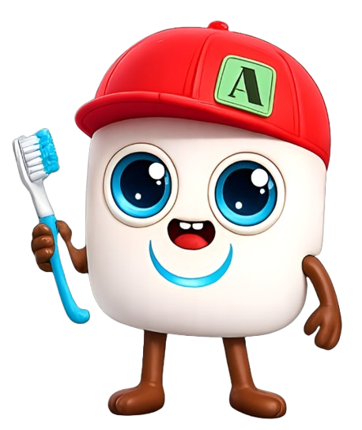
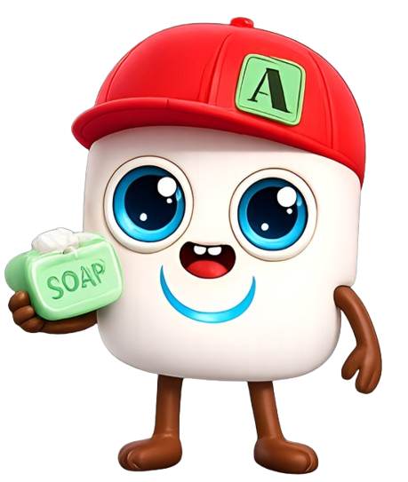
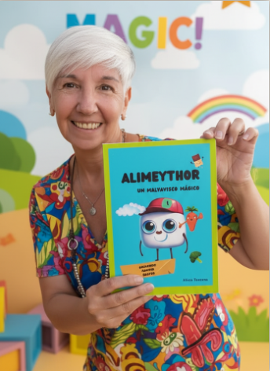
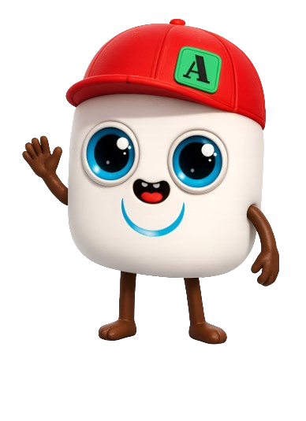
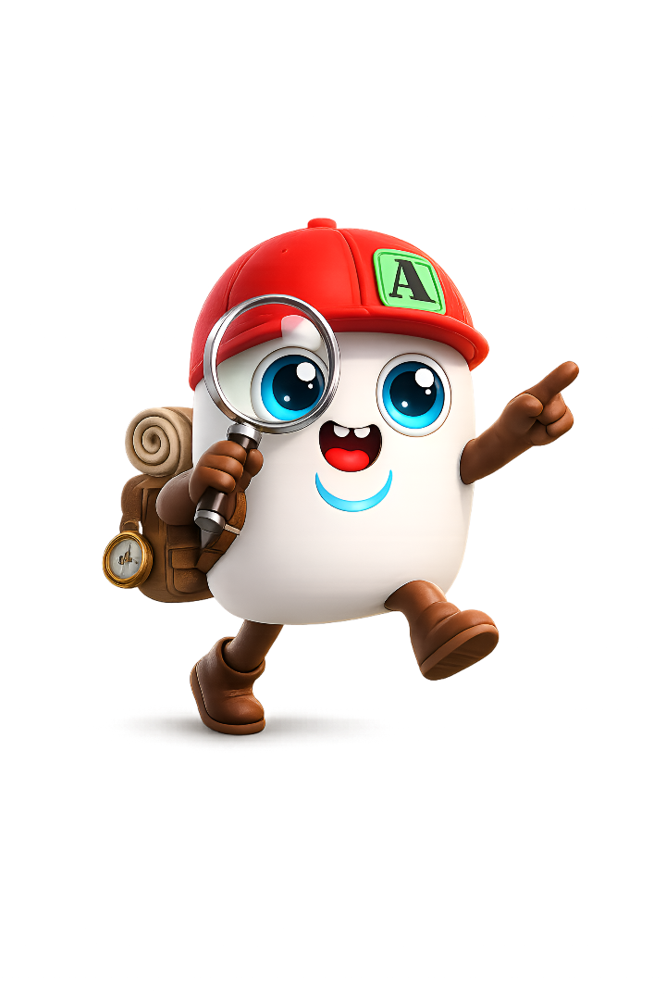
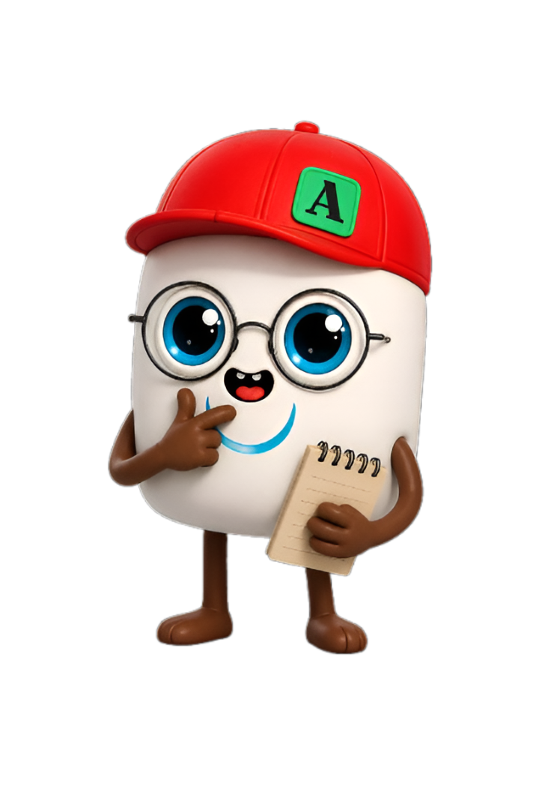

Tocá el botón o presioná Enter


Tocá el botón o presioná Enter
Alimeythor es una plataforma digital pensada para que los chicos aprendan a sentir, imaginar y crecer — compartiendo momentos reales con vos.

Creado por Alicia — Madre de 4 hijos y Lic. en Enfermería.
Pensado para familias reales.

Todo el contenido está listo para usar. Elegí por dónde empezar:

Historias breves sobre emociones, hábitos y vínculos.
Leer un cuento →Música original para cada momento del día.
Escuchar música →Un juego interactivo y planchas de stickers para imprimir.
Jugar ahora →Estas son las cuatro áreas que trabajamos en cada cuento, canción y juego. Si te identificás con alguna, Alimeythor es para tu familia.
En Alimeythor cada cuento y juego lo invita a crear sus propios mundos. La imaginación se entrena como un músculo — y es la base con la que los chicos procesan sus emociones.
Cada actividad está pensada para hacerse de a dos: vos y tu hijo. Porque el vínculo no se construye con más tiempo, sino con momentos de calidad compartida.
Las historias de Alimeythor muestran los valores en acción: los chicos los incorporan viéndolos vivir en sus personajes, no escuchando sermones.
Trabajamos las rutinas con herramientas que las transforman en juego: hábitos saludables que se construyen con magia, no con gritos.
Los niños crecen rodeados de pantallas, estímulos y contenido constante. Pero muchas veces falta algo esencial: emociones, imaginación y tiempo compartido.
Un universo pensado para transformar cuentos, juegos y videos digitales en momentos que puedan acompañar emocionalmente a las familias.
Crear un espacio donde las familias puedan imaginar, sentir y crecer compartiendo experiencias reales.

Lo que toda mamá y papá quiere saber antes de empezar.
Está pensado para chicos de 4 a 9 años, con contenido adaptado a cada etapa de su desarrollo emocional.
Es la llave de entrada al Mundo Alimeythor. Te da acceso a cuentos, canciones, juegos y actividades para trabajar en familia las emociones y los valores, con nuevas sorpresas todo el tiempo.
El personaje nació hace 2 años y fue creciendo junto a las familias que lo acompañan, sumando herramientas para que cada experiencia se sienta cercana y real.
Porque criar no es solo acompañar, también es construir vínculo. Mundo Alimeythor convierte cada cuento, canción y juego en una oportunidad para conectar y disfrutar en familia. Las historias de hoy son los recuerdos de mañana.
Sumate a la comunidad de familias que ya viven la experiencia Alimeythor.
No buscamos apagar pantallas. Buscamos encender emociones.La idea que guía todo lo que hacemos